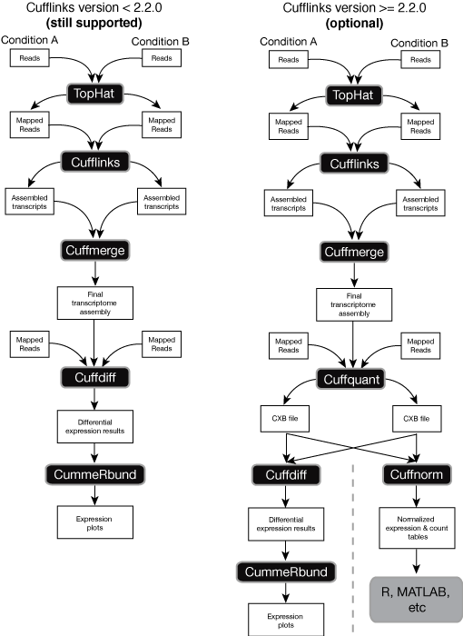

Site Map
News and updates
| New releases and related tools will be announced through the mailing list |
Getting Help
| Questions about Cufflinks and Cuffdiff should be posted on our Google Group. Please use tophat.cufflinks@gmail.com for private communications only. Please do not email technical questions to Cufflinks contributors directly. |
Releases
| version 2.2.0 | 5/25/2014 |
| Source code | |
| Linux x86_64 binary | |
| Mac OS X x86_64 binary |
Related Tools
- Monocle: Single-cell RNA-Seq analysis
- CummeRbund: Visualization of RNA-Seq differential analysis
- TopHat: Alignment of short RNA-Seq reads
- Bowtie: Ultrafast short read alignment
Publications
-
Trapnell C, Williams BA, Pertea G, Mortazavi AM, Kwan G, van Baren MJ, Salzberg SL, Wold B, Pachter L. Transcript assembly and quantification by RNA-Seq reveals unannotated transcripts and isoform switching during cell differentiation
Nature Biotechnology doi:10.1038/nbt.1621
-
Roberts A, Trapnell C, Donaghey J, Rinn JL, Pachter L. Improving RNA-Seq expression estimates by correcting for fragment bias
Genome Biology doi:10.1186/gb-2011-12-3-r22
-
Roberts A, Pimentel H, Trapnell C, Pachter L. Identification of novel transcripts in annotated genomes using RNA-Seq
Bioinformatics doi:10.1093/bioinformatics/btr355
-
Trapnell C, Hendrickson D,Sauvageau S, Goff L, Rinn JL, Pachter L Differential analysis of gene regulation at transcript resolution with RNA-seq
Nature Biotechnology doi:10.1038/nbt.2450
Contributors
- Cole Trapnell
- Adam Roberts
- Geo Pertea
- David Hendrickson
- Loyal Goff
- Martin Sauvageau
- Brian Williams
- Ali Mortazavi
- Gordon Kwan
- Jeltje van Baren
- John Rinn
- Steven Salzberg
- Barbara Wold
- Lior Pachter
Links
2.2.0 release - 3/25/2014
This release introduces some new features designed to simplify and speed up Cufflinks workflows. Release version 2.2.0 includes two new programs, cuffquant and cuffnorm that make it easier to quantify gene expression in experiments with many samples. These are particularly helpful for single cell RNA-Seq experiments, where the reads for each cell are provided as a separate FASTQ file or pair of files.
Release 2.2.0 also introduces sample sheets and contrast files. These facilities make it easier to work with large analyses involving many samples.
Cuffquant quantifies gene and transcript expression levels for a single BAM file. These levels are stored in a new binary file type, the CXB file. You can then provide CXB files for your samples directly to Cuffdiff instead of BAMs. Mixing BAM and CXB files is not yet supported. Because expression levels for each sample are quantified by Cuffquant, Cuffdiff doesn't have to perform this step, which speeds up Cuffdiff runs substantially and lowers their memory footprints. We recommend that most users switch to this new Cuffdiff workflow for all experiments that involve more than a few samples. However, note that running Cuffquant prior to running Cuffdiff is optional - you can still directly supply BAM files to Cuffdiff.
Cuffquant files can also be passed to Cuffnorm, which simply computes a normalized table of expression values for genes and transcripts. Unlike Cuffdiff, Cuffnorm performs no differential expression testing. Cuffnorm also does not calculate confidence intervals on expression values. Cuffnorm is meant to be used when all you want is a set of comparable expression values for genes, transcripts, CDS groups, and TSS groups, such as when you simply want to make heatmaps or dendrograms or plot values for individual genes. Cuffnorm can output values in one of two formats: Cuffdiff tracking tables (which can be used with CummeRbund), or in simple, tab-delimited tables. The latter is the recommended output format for use with Monocle in single cell RNA-Seq experiments.
Here's an overview of the new (optional) workflow, compared to the old workflow described in our Nature Protocols paper:
2.1.1 release - 4/11/2013
This release fixes a bug introduced with version 2.1.0, which for some users caused Cufflinks to output empty transcript GTF files.
2.1.0 release - 4/10/2013
This release substantially improves the accuracy, speed, and memory footprint of Cufflinks and Cuffdiff. It is recommended for all users. Those who wish to see the impact of the accuracy improvements should look at the new benchmarking section. In addition to numerous bugfixes, the main changes are as follows:
- Cuffdiff now includes a new statistical test. Prior versions used a delta method-based test, which lacked power for designs with more than a few replicates. The new test directly samples from the beta negative binomial model for each transcript in each condition in order to estimate the null distribution of its log fold change under the null hypothesis. This test is substantially more powerful, resulting in improved accuracy over all experimental designs, particularly those with more than three replicates. A similarly improved test is now used for isoform-switching. The benchmarking page shows the improvements in detail.
- Prior versions of Cuffdiff reported the FPKM for each gene and transcript that maximizes the joint likelihood of the reads from all replicates pooled together. In version 2.1, Cuffdiff instead reports the mean of the maximum likelihood estimates from each replicate processed independently. As shown in the benchmarking section, these two methods report nearly identical values. However, the new method is faster and simpler to compute, and will enable new features for future releases.
- The high and low confidence intervals reported by Cufflinks and Cuffdiff are now constructed from the samples generated from the beta negative binomial model, rather than estimated as twice the standard deviation. This better reflects the underlying distribution of the FPKM.
- The library normalization system in Cuffdiff 2 has been overhauled, and several new normalization-related options have been added:
- The new --library-norm-method option now sets which method should be used to compute scaling factors for the library sizes. The default method geometric is the same as prior releases of Cuffdiff (and the same as DESeq). The optional modes quartile and classic-fpkm are also supported.
- The new --dispersion-method option controls how the variance model should be computed for each condition. The default mode pooled computes a mean-variance model for each condition that has multiple replicates, averages these models to generate a "pooled" average, and uses it for all conditions. This policy is borrowed from DESeq. Alternative models blind and per-condition are also supported. Prior versions of Cuffdiff used the method per-condition.
- Several bugs for quartile normalization have been fixed.
- Quartile normalization is no longer supported in Cufflinks, just in Cuffdiff. Cufflinks only supports the classic-fpkm mode.
- All library size normalization is now conducted through the internal scaling factor. The external scaling factor should always be set to 1.0.
- Library sizes and dispersions are now computed only on fragment counts from compatible fragments. Prior versions counted intronic and other structurally incompatible fragments in some sections of the code.
- An optimized sampling procedure drastically improves running time for Cuffdiff. Cufflinks also benefits from this change. The improvements are particularly noticeable on deeply sequenced libraries.
- The range of p-values that users should expect from Cuffdiff has changed. Because the test is now based on explicit sampling from the beta negative binomial, users will not see values less than 10^-5 by default. The test_stat field of Cuffdiff's output still contains the delta method's test statistic, but this test statistic is not used to compute p-values. It is preserved for backward compatibility with some functions in CummeRbund.
- Some extraneous temporary output files have been removed after Cuffmerge runs.
New google group for TopHat, Cufflinks, and CummeRbund users - 4/11/2013
To better handle the many questions we receive from users, we have launched a new google group for discussion and questions about our tools. We are simply unable to handle the email we receive, and our hope is that the users of of the group will help each other. While we will continue to answer email sent to tophat.cufflinks@gmail.com as we have time, we will also answer questions posted to the group, and the latter questions will be prioritized. Please post questions or comments to the group (if your question hasn't already been asked and answered) before emailing tophat.cufflinks@gmail.com.
TransDecoder: calling novel ORFs in RNA-Seq assemblies- 4/11/2013
Our friend Brian Haas (of Trinity fame) has written a tool that might be helpful to Cufflinks users wishing to discover new coding genes and splice variants. TransDecoder takes as input an assembly of RNA-Seq reads from Trinity, Cufflinks, and other tools and produces predictions about likely open reading frames as output. http://transdecoder.sourceforge.net/
Cuffdiff 2 manuscript published at Nature Biotechnology - 12/11/2012
We are happy to announce a new manuscript describing Cuffdiff 2 has appeared in print at Nature Biotechnology. The manuscript contains performance assessments of Cuffdiff 2 and a detailed comparison of our methods against other tools for differential analysis.
2.0.2 release - 7/8/2012
This release fixes several bugs:
- Some users were experiencing a crash on exit in Cufflinks when run with bias correction. The source of the crash has been fixed.
- A few minor fixes in the estimation routines for cross-replicate variability.
- Providing the same BAM file multiple times was producing inconsistent expression values. This has been corrected.
2.0.1 release - 6/15/2012
This release addresses several bugs, most of which were introduced as part of the 2.0.0 release:
- Some users were experiencing a problem with the Linux pre-compiled binary packages where Cuffdiff was reporting many genes and transcripts as having expression levels of zero or "nan" or "inf". This was determined to be caused by a recent change in the binary packaging process we use to distribute pre-compiled binaries.
- Multi-read correction in Cuffdiff 2.0 was not always being applied when the user specified -u/--multi-read-correct.
- Some rarely encountered GTF parsing issues have been corrected.
- Effective length correction can be disabled in Cufflinks and Cuffdiff with the new --no-effective-length-correction option.
Illumina iGenomes now include both Bowtie1 and Bowtie2 indexes - 5/23/2012
2.0.0 release - 5/4/2012
This release substantially improves the accuracy and robustness of differential analysis with Cuffdiff. The update also resolves several user-reported issues and bugs, and several requested features. Due to the large number of enchancements and fixes, users are encouraged to treat this as a beta release. A manuscript describing the algorithmic improvements to the software is in preparation. Changes include:
- Cuffdiff now reports estimated counts assigned to each gene and transcript, along with count variances due to uncertainty and cross-replicate variability. See the manual for more details on the new count tracking file format. Count tracking is not yet available in Cufflinks (e.g. with the -G option), but this functionality will be ported over in a future release.
- Cuffdiff now tracks and records per-replicate FPKMs and counts. See the manual for more details on the new replicate tracking files. A version of CummeRbund that exposes this information in many plot types will be forthcoming.
- Cuffdiff reports replicate and run metadata as part of each run.
- Some users were reporting a high FAIL rate on gene and transcripts quantification. This has been resolved according to a battery of tests using real and simulated data. The root cause was that in conditions with substantial overdispersion across replicates, the FPKM variance-covariance matrices produced by the Cuffdiff model were not always positive-definite. Cuffdiff was detecting this, and marking those genes as having unreliable confidence intervals. Prior to 2.0.0, the model contained a heuristic approximation of the covariances between assigned fragment counts (which are necessary for calculating the variance on each gene's expression level), and this approximation was producing poorly conditioned matrices. We have replaced the heuristic approximation with a direct sampling approach, in effect "simulating" the assignment of fragments to each isoform many times for each gene. By simulating fragment generation and assignment to each transcript, we are reconstructing variance-covariance matrices for assigned fragment counts that are always properly condition. This sampling approach produces more accurate estimates of variance and covariance as well, improving accuracy of transcript and gene level differential analysis. Users should expect more accurate quantification and shorter, more conservative lists of differentially expressed genes and trasncripts.
- After substantial performance testing, we have determined that the false discovery rate of Jensen-Shannon-based tests (differential splicing, CDS switching, and promoter switching) can be unnacceptably high when used with fewer than three replicates in the conditions being compared. Cuffdiff now refrains from performing significance tests when one of the conditions involved has fewer than three replicates. You can change this behavior with the new --min-reps-for-js-test option. Cuffdiff still produces splicing.diff, cds.diff, and promoters.diff regardless of how many replicates you have. These files will include the JS distance scores, but none of the genes will be marked significant if you have fewer than the required number of replicates.
- Cufflinks and Cuffdiff can now be told to ignore fragments that map to the genome more than a specified number of times using the --max-frag-multihits option. By default, Cufflinks and Cuffdiff still consider all fragments in the alignment file.
- Cufflinks by default doesn't report assembled transfrags that are built mostly from multiply mapping reads. This behavior can now be controlled or disabled with the new --max-multiread-fraction option.
- Cufflinks by default fills small gaps in coverage when assembling transcripts. Gaps smaller than 50bp are filled and the transfrags joined. This behavior can be controlled or disabled with the new --overlap-radius option.
- Before testing for differential expression or regulation of genes and transcripts, Cuffdiff now checks that the variance model for the gene or transcript in question is a good fit. This behavior can be controlled or disabled with the --min-outlier-p option. See the relevant section in the "How Cufflinks works" page for more on this.
- A few bugs in the bias correction code and isoform deconvolution routines have been fixed, improving transcript-level expression accuracy.
- Positional bias correction was reducing accuracy on certain datasets in some genes, so we have changed the default bias correction algorithm to model sequence-specific bias only. Bias correction is still disabled by default, and positional bias correction is still available as an optional mode.
- Several minor issues related to library size normalization have been fixed.
- A new library size normalization mode based on the geometric mean has been added, and is now the default for Cuffdiff. This method was introduced by Anders and Huber (Genome Biology, 2010).
- Cuffdiff now uses the Eigen linear algebra libraries. Eigen is a fast package for matrix operations and makes good use of vector registers in modern processors, speeding up some of the numerical routines used during abundance estimation.
- Cuffdiff now requires Boost version 1.47 or later.
TopHat and Cufflinks protocol published at Nature Protocols - 3/12/2012
A complete bioinformatic protocol for analysis of RNA-Seq data using our tools has been published at Nature Protocols. The protocol covers read alignment with TopHat, gene and transcript discovery with Cufflinks, annotation analysis with Cuffmerge and Cuffcompare, differential expression analysis with Cuffdiff, and visualization with CummeRbund. Several variants of the protocol are included for those who wish to forgo certain analysis steps, such as gene discovery.
1.3.0 release - 1/2/2012
This release improves the accuracy of Cuffdiff's isoform switching tests and fixes several bugs.
- Cuffdiff find genes that are differentially spliced or switch promoters between conditions using the Jensen-Shannon distance metric. Previous versions of Cuffdiff tested for the signficance of observed shifts in relative isoform abundance using an analytic approximation of the variance of this metric for each gene. However, when few replicates are available or sequencing is shallow, this approximation can be poor. This release improves Cuffdiff's accuracy with a computational-derived estimate of the variance of the Jensen-Shannon metric by sampling in each gene. This improvement substantially reduces the false positive rate of Cuffdiff's tests in splicing.diff, promoters.diff, and cds.diff. Tests for changes in global expression are not affected.
- A bug in Cuffmerge that caused a crash with a warning about improper sorting of SAM files has been corrected.
- A bug that caused Cuffmerge to drop some reference transcripts from the output has been fixed.
- A few minor issues with Cufflinks' pre-assembly alignment filters have been fixed.
1.2.0 release - 11/23/2011
This release fixes a number of bugs and includes some signficant accuracy and performance improvements:
- Some users were experiencing a large number of genes or transcripts marked FAIL during Cuffdiff runs or Cufflinks quantification runs. These were caused by one of several issues. Most of these genes were due to numerical exceptions generated during importance sampling, a procedure originally intended to improve accuracy of abundance estimates in genes with one or more very low abundance isoforms. After detailed simulation experiments, we have concluded that the gains in accuracy are minor and do not justify the number of genes that FAIL when this procudure can't be executed. We have dropped both this routine and the bootstrap check, which can similarly generate FAIL genes under similar conditions.
- Improvements to FPKM variance estimates for genes and transcripts, resulting in better differential expression accuracy in Cuffdiff.
- A bug that reduced accuracy in certain abundant genes has been corrected.
- The --max-bundle-frags option, which skips extremely deeply sequenced loci that might otherwise crash the program, has been improved so that those loci are never allowed to fully load into memory. This improves overall memory footprint and should prevent memory-related crashes.
- A bug in bias correction that results in "Inf" and "NaN" values has been fixed.
- An improved pre-quantification fragment collapse optimization has substantially lowered memory footprint and improved running time for Cuffdiff and Cufflinks abundance estimation.
- A bug that halts runs on hash-collisions for read names has been fixed.
- A buffer overflow in the SAM parser has been fixed.
- Other minor bugfixes and accuracy improvements for quantification.
CummeRbund released - 11/21/2011
Extracting biological insight from transcript-level RNA-Seq analysis can be very challenging. Due to the volume and complexity of output from RNA-Seq analysis pipelines, many users may choose to focus only on gene-level results, and thus miss crucial biological insights that a transcript-level analysis can provide. We are happy to present CummeRbund, an R/Bioconductor package that simplifies the organization, access, exploration, and visualization of the various output files of a Cuffdiff differential expression analysis. CummeRbund begins by re-organizing the Cuffdiff output files, and storing these data in a local SQLite database. During this process, CummeRbund indexes the data to speed up access to specific feature data (genes, isoforms, TSS, CDS, etc.), and preserves the various relationships between these features. Access to data elements is done through R via the RSQLite package and data are presented in appropriately structured R classes with various convenience functions designed to streamline your workflow.
CummeRbund simplifies the way in which you access and analyze your RNA-Seq data. Features include:
- Numerous plotting methods to allow for rapid visualization of RNA-Seq data quality and global statistics such as FPKM distribution, as well as simple routines for plotting expression levels for one or more genes, their isoforms, TSS groups, or CDS groups.
- Plots are generally publication-ready. However, because they are built with ggplot2, plot objects returned by the plotting routines are easy to manipulate in a live R session so you can tweak them to your specification.
- Persistent storage and indexing of cuffdiff data in a relational database.
- Quicker searching for feature-specific information
- Seamless aggregation of all related data points.
- Direct SQL/RSQLite querying of cuffdiff data for access to complex datasets using specialized queries.
- Formalized R classes for data access and manipulation.
- 'Pointer' classes call data directly from SQL tables.
- 'Data' classes contain queried results and can be manipulated directly in R.
- Methods for direct access to FPKM values, differential expression data, and additional annotation of all gene-, isoform-, TSS-, and CDS-level features.
- Output formats allow for standard browsing/analysis in R (data.frame, list, etc).
- Geneset-level data access:
- Relevant data for meaningful subsets of genes (e.g. 'significantly regulated') can be quickly aggregated and stored in a geneset object.
- plot wrappers for heatmaps, expression profiles, barplots, volcano plots, scatterplots, etc.
- Gene-centric data access:
- All interconnected data for a single gene are aggregated into a single data object.
- Access to all relevant FPKM, differential expression, and annotation data for all features of a single gene.
- Gene-specific plots (expression profiles)
- Individual Feature-level data access as well:
- Individual Isoforms, TSS, CDS, etc. are also available.
- Direct access to distribution test results for alternative splicing, TSS groups, and CDS usage.
1.1.0 release - 9/8/2011
This is a fix release to address several issues reported by our users:
- Cuffdiff now includes a more sophisticated check for sufficient sequencing depth prior to testing for differences, which substantially improves the accuracy of differential expression analysis in loci with low to medium depth.
- A bug in the calculation of the parameters for the beta negative binomial distribution used during variance estimation has been fixed.
- Some users have reported that Cufflinks or Cuffdiff crashes due to running out of memory when processing highly expressed loci. Both programs now have a maximum number of fragments that can fall within a locus. If a locus has more than this maximum, it is skipped. The threshold is configurable via the --max-bundle-frags option.
- Gffread now keeps the longest CDS when collapsing transcripts.
FILE FORMAT CHANGES:
- By popular request, fold changes are now reported log2, rather than natural log
- The status column in fpkm tracking files has been replaced by a per-condition quantification status column
- The header size limit in Cufflinks' BAM parser used to have a 4 megabyte limit. This has been removed to allow Cufflinks to be used on assemblies with many contigs.
iGenomes index and annotation packages available for download - 7/31/2011
Illumina has generously provided a set of freely downloadable packages that contain everything you need to get started working with TopHat and Cufflinks. These packages contain Bowtie indexes for the human, mouse, and fly genomes as well as many others. The packages also contain annotation files (in GTF format) from UCSC, Ensembl, NCBI, and other sources. These files are augmented with the special attributes Cufflinks needs to perform differential splicing and promoter analysis. We strongly encourage users to download and try these packages!
Cufflinks RABT assembly paper published - 6/26/2011
Our new paper on the Cufflinks reference annotation based transcript (RABT) assembly method introduced in v1.0.0 has appeared in Bioinformatics. The paper describes how the RABT assembler builds upon a known reference annotation to better identify novel transcripts. You can try the RABT assembler in Cufflinks by using the -g option as explained in the manual.
Please cite this paper as well as the original Cufflinks paper if using the RABT assembler in your work.
1.0.3 release - 6/1/2011
This is a fix release to address several issues reported by our users:
- Several Cuffmerge bugs have been fixed. One of these caused Cuffmerge to fail with a message about chromosome sort ordering.
- A comment parsing issue in Cuffmerge has been fixed.
- GTF files emitted by Cuffcompare are now lexicographically sorted by chromosome.
- Gffread now has some transcript clustering and redundancy reduction features, similar to those found in Cuffcompare
- The header size limit in Cufflinks' BAM parser used to have a 4 megabyte limit. This has been removed to allow Cufflinks to be used on assemblies with many contigs.
1.0.2 release - 5/22/2011
This release fixes several bugs and adds a few enhancements:
- The differential splicing and promoter and cds use testing in 1.0.0 and later was broken, resulting in very few (often zero) differentially regulated genes. This has been fixed.
- Many users were confused about the magnitude of quartile-normalized FPKM values in Cuffdiff. Now, quartile normalized FPKM values are scaled by a constant such that they are numerically in roughly the same range as non-quartile normalized FPKMs. Thanks to Ariel Schwartz for suggesting this change.
- A performance issue when processing BAMs with many unmapped reads has been fixed.
- Cuffcompare now creates .tmap and .refmap in the directory of the input file(s) with the same prefix as given by -o
- An issue that caused cuffmerge to fail with a message about improperly sorted SAM files has been corrected.
- Improved cuffcompare GFF support.
- Cuffdiff and Cufflinks now accept new options controlling whether all hits are counted towards the FPKM denominator, or only those compatible with some transcript in the reference annotation. Counting only compatible hits avoids certain types of bias that arise when one sample contains far more hits that aren't compatible with any transcript than the other sample does. For example, if one sample contains vastly more mapped ribosomal RNA hits, FPKM values will appear lower in that sample, potentially leading to false positive differential expression calls. Cuffdiff by default now uses only compatible hits. Cufflinks still uses total hits by default, as using compatible hit accounting requires a reference GTF.
1.0.1 release - 5/6/2011
This fix release corrects several issues introduced with 1.0.0:
- The binary packages for 1.0.0 failed to include gtf_to_sam and gffread, causing cuffmerge to fail.
- Cuffdiff's splicing.diff was missing the q_value column header
- Several portability issues have been fixed (thanks to Nathan Weeks for the patches)
- Cuffmerge's help message incorrectly listed several options.
1.0.0 release - 5/5/2011
This release represents a huge leap for Cufflinks in terms of performance and features. It is highly recommended that all users upgrade to this version of Cufflinks. Updates and improvements include:
- A new Reference Annotation Based Transcript (RABT) assembly mode has been added. More details can be found in the How Cufflinks Works section.
- Major improvements to Cuffdiff. Handling of replicates in Cuffdiff have been dramatically overhauled. Cuffdiff now models fragment count overdispersion with a beta negative binomial distribution in each condition prior to testing. See the substantially updated page on How Cufflinks works for more details.
- Bias correction described here is now enabled with the -b/--frag-bias-correct option (-r/--reference-seq is no longer in use). A path to the reference multi-fasta used in mapping must be supplied following the option.
- Added support for improved handling multi-mapping reads. Enable with the -u/--multi-read-correct option. See How Cufflinks Works for more details.
- Trimming has been instituted to more accurately locate the 3' ends of transcripts during assembly based on coverage.
- Cufflinks now includes a new tool called Cuffmerge to help merge assemblies from multiple samples into a single GTF for use with Cuffdiff. The tool also helps integrate a reference annotation file. See the Getting Started page for more details.
- Output file formats have been made consistent between Cufflinks and Cuffdiff. See the Manual for more details on the new formats.
- Both GFF3 and GTF2.2 annotations are now fully supported as input to all programs (see here).
- Improved reporting of map properties.
- The programs now check for available updates automatically on launch.
- Upper-quartile normalizaion has been fixed to be consistent with published literature (enable with -N/--upper-quartile-norm).
- Fixed a bug where some splice-junction reads were lost in quantitation.
- Fixed a bug where reads landing in introns were over-filtered in assembly.
- Numerous improvements in speed for both assembly and quantitation.
- Cuffdiff now uses dramatically less memory. Cufflinks' memory footprint has also shrunk.
- Numerous minor bug fixes.
Cufflinks Bias Correction paper published - 3/16/2011
Our new paper on the Cufflinks bias correction method introduced in v0.9.0 has appeared in Genome Biology. The paper describes the details of the method and provides validations for the improvements in expression estimates it produces. As a reminder, bias correction is only activated when a reference sequence (fasta) is supplied with the -r option.
Please cite this paper if using Cufflinks bias correction in your work.
New "Getting Help" email address for TopHat and Cufflinks
In order to more effectively answer user help requests and improve usability and documentation, we have created an email address to which users can send messages for technical support. If you have questions about Cufflinks or TopHat, please send them to tophat.cufflinks@gmail.com. We will do our best to answer your question in a timely fashion, although please read the manual carefully before sending your email. We have very limited time to answer questions, and most questions require careful, technical answers.
If you believe you have found a bug in the software, please include a small package of test data with your email so that we can reproduce your problem locally. A test example makes it much easier to correct the issue.
TopHat and Cufflinks now supported through Galaxy
We are very pleased to announce that you can now run TopHat and Cufflinks through Galaxy. The Galaxy project aims to make informatics tools accessible through the web, and allows you to experiment with parameter settings and create sophisticated analysis workflows easily. Galaxy is developed by researchers at Emory University and Penn State in the Taylor and Nekrutenko labs, respectively. We are extremely grateful for the Galaxy team's work, and proud to have TopHat and Cufflinks offered through their platform.
0.9.3 release - 11/30/2010
This release fixes several issues that affect abundance estimation and differential expression accuracy, and is strongly recommended for all users. Additionally, there are some speed and threading improvements during bias modeling and correction. Finally, a bug which causes Cufflinks to crash on some BAM files has been fixed.
0.9.2 release - 10/26/2010
This release modifies the way library types are handled to add support for more strand-specific protocols as well as adaptability to future protocols that may be introduced. Note that the way library-types are specified in the input has changed as a result. See the Manual for more details.
Some portability issues, which resulted in segfaults on some systems, have been fixed in the precompiled binaries.
0.9.1 release - 10/3/2010
This release includes two bug fixes and some enhancements for strand-specific RNA-Seq libraries:
- SAM files without headers, such as those produced by TopHat 1.0.14 and earlier, were being erroneously reported as unsorted during GTF-based quantification, causing Cufflinks and Cuffdiff to exit. This has been fixed, so that SAM files are now correctly handled, restoring compatibility with output from TopHat 1.0.14 and earlier.
- Cufflinks and Cuffdiff were sometimes producing different FPKM values for minor isoforms when run on the same sample. They are now consistent, and should agree on isoform abundance calls.
- Strand-specific, single end libraries are now supported. Some library type names have changed to reflect the expanded list of supported protocols.
Update - fix for 0.9.0
The binaries and source have been updated to address a floating point exception when using a SAM file with no header and without a GTF
New developer - Adam Roberts
The Cufflinks team has been joined by Adam Roberts, a Ph.D. student from the UC Berkeley Department of Computer Science. Adam has made many improvements to Cufflinks (see the announcement below), and we are very fortunate to benefit from his talents and expertise.
0.9.0 release - 9/27/2010
This release includes significant bug fixes as well as some major new features. Enhancements include:
- Thanks to the work of Adam Roberts, Cufflinks now automatically learns certain properties of each RNA-Seq library you analyze with it, including sequence specific biases. Transcript and gene abundance estimates are significantly more accurate when run with our (optional) new bias correction technology. A manuscript describing these changes is in preparation.
- Due to Adam's changes, we do not recommend that you supply the mean and standard deviations of the fragment length distribution for your library. Cufflinks now learns these automatically.
- Cuffdiff now allows you to supply reads from multiple technical or biological replicates, and adjusts transcript and gene abundance estimates and their confidence intervals accordingly.
- Cuffdiff will by default report testing results between all pairs of samples, rather than treating samples as a time series. Time series analysis is still supported via the --time-series option.
- Cufflinks and Cuffdiff now offer improved compatibility with reads aligned with Life Technology's BioScope aligner. Strand specific SOLiD RNA-Seq runs are fully supported.
- Cufflinks and Cuffdiff support quantile normalization of FPKM.
- Cufflinks and Cuffdiff now support both BAM and SAM files. Both file types require that the chromosome names in header @SQ records, if present, must be sorted in the same order as the reads.
- Cufflinks and Cuffdiff are much less verbose in their output by default, but each supports a "verbose" mode with a text progress bar for users that want to keep an eye on their runs
- In response to user requests, FPKM values are now provided by Cufflinks and Cuffdiff, even if their expression levels are zero, in an effort to make downstream analysis of Cuffdiff easier.
- The new "mask" GTF option allows you to supply Cufflinks with regions of the genome that it should ignore during assembly and quantification. Cuffdiff also supports mask GTF files for convenience.
- Significant assembler fixes and improvements.
- Some of the output files produced by Cuffdiff have updated and simplified formats.
- There are a number of new command line options that users may wish to set under certain circumstances.
Note that building Cufflinks from source now requires the SAM tools. See the installation instructions for more details.
0.8.3 build update - 7/2/2010
The 0.8.3 release on 6/30 included a broken version of Cuffdiff. This and a few other minor issues have been resolved and the builds and source have been updated.
0.8.3 release - 6/30/2010
Fixes and accuracy improvements to the Cufflinks assembler. This update is strongly recommended for users interested in identifying novel transcripts. Other changes:
- Additional expression reporting fixes
- Output from Cufflinks and Cuffdiff can now be directed to a separate directory.
Cufflinks paper published - 5/2/2010
Our paper on Cufflinks has appeared at Nature Biotechnology. In a study of developing mouse muscle cells, we identified thousands of new transcripts and detected differential splicing and promoter use in hundreds of genes by examining changes in isoform abundance levels. The paper is aimed at a general audience, so much of the algorithmic and mathematical detail can be found in the supplemental methods (WARNING: 2 MB PDF).
0.8.2 release - 3/26/2010
Numerous bug fixes and significant performance improvements in Cufflinks and Cuffdiff. Note that some the formats of some files have changed. Other changes:
- Expression values were not being reported for a small number of genes when using certain annotation files.
- Fixed a divide-by-zero error in Cuffdiff
- Various GTF parser fixes.
- .expr files produced by Cufflinks now contain FPKM confidence interval columns
- Isoform filtering was being innappropriately applied when working with annotation in Cufflinks (via --GTF)
- The .tmap files reported by Cuffdiff contained zero in FPKM field.
- New command line options --num-importance-samples and --max-mle-iterations allow advanced users to influence of the transcript abundance estimation.
0.8.1 release - 2/13/2010
This is a minor fix release. Cufflinks 0.8.0 had some lingering references to "RPKM", which have been replaced with "FPKM". Reported expression values have always been in FPKM, this is simply a nomenclature change to better reflect what RNA-Seq actually measures. See the section on FPKM in the description of how Cufflinks works
0.8.0 release - 2/5/2010
We are happy to announce a major update to Cufflinks that introduces some powerful new features and includes a number of performance improvement and bug fixes. Highlights include:
- Cufflinks now includes a new tool, "Cuffdiff", which performs testing for differential expression, splicing, promoter use, and coding sequence output on two or more RNA-Seq samples. See the greatly expanded manual for details.
- Cuffcompare now reports a file containing the "union" of all transfrags in the files you give it as input, greatly simplifying downstream validatation of novel transcripts.
- Cufflinks' assembler has been overhauled and optimized, resulting in a speedup of 4-5 times over version 0.7.0, and a greatly reduced memory footprint. Phasing of splicing events has also been improved.
- Many bugfixes.
0.7.0 release - 9/26/2009
The first public release of Cufflinks is now available for download. Cufflinks is a program for the comparative assembly of transcripts and the estimation of their abundances in an RNA-Seq experiment. It runs on Linux and OS X. It also comes with a tool to track transcripts across multiple samples, for example in a time course of RNA-Seq.
Cufflinks takes as input a file of alignments in SAM format, and reports transfrags in GTF format. You can use TopHat to align your reads, as TopHat reports its alignments in SAM format.
This software is a work in progress - it is a beta release, and new features will continue to be added over the next couple of weeks. To suggest a feature or report a bug, please email Cole Trapnell